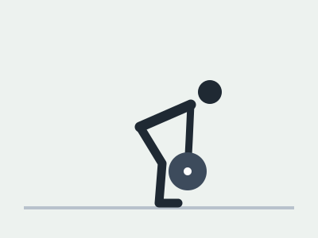

Румынская тяга

Наклон со штангой на почти прямых ногах. Хорошо нагружает заднюю поверхность бедра.
Характеристики
- Основные мышцы: задняя поверхность бедра, ягодицы
- Дополнительно работают: мышцы спины
- Снаряжение: штанга
- Уровень: средний
- Рекомендация: 3 подхода по 8–12 повторений
Техника выполнения
- Возьми штангу и встань прямо.
- Слегка согни колени и не меняй этот угол.
- Наклоняйся, отводя таз назад, штанга скользит вдоль ног.
- Опусти штангу до середины голени и вернись наверх.
Частые ошибки
- Круглая спина.
- Слишком сильно согнутые колени.
- Штанга далеко от ног.